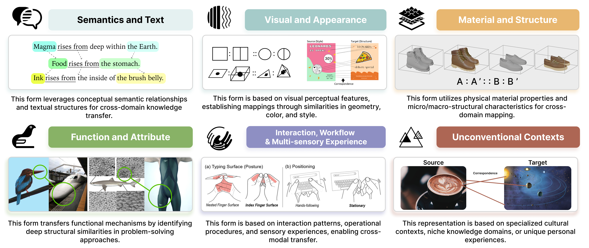

Beyond Input–Output: Rethinking Creativity through Design-by-Analogy in Human–AI Collaboration
While the proliferation of foundation models has significantly boosted individual productivity, it also introduces a potential challenge: the homogenization of creative content. In response, we revisit Design-by-Analogy (DbA), a cognitively grounded approach that fosters novel solutions by mapping inspiration across domains. However, prevailing perspectives often restrict DbA to early ideation or specific data modalities, while reducing AI-driven design to simplified input–output pipelines. Such conceptual limitations inadvertently foster widespread design fixation. To address this, we expand the understanding of DbA by embedding it into the entire creative process, thereby demonstrating its capacity to mitigate such fixation. Through a systematic review of 85 studies, we identify six forms of representation and classify techniques across seven stages of the creative process. We further discuss three major application domains: creative industries, intelligent manufacturing, and education and services, demonstrating DbA's practical relevance. Building on this synthesis, we frame DbA as a mediating technology for human-AI collaboration and outline the potential opportunities and inherent risks for advancing creativity support in HCI and design research.

This figure (a) illustrates the three dimensions through which the Design-by-Analogy (DbA) method supports creativity. It also explains (b) why DbA could be served as a technology mediation in the creative process, forming the foundation of this paper.
A taxonomy of six representations for Design-by-Analogy: (1) Semantics & Text, (2) Visual & Appearance, (3) Material & Structure, (4) Function & Attribute, (5) Interaction & Experience, and (6) Unconventional Contexts.

From the opening image (Phase 1: Vision) to the final illustration (Phase 4: Meta), we use metaphor and narrative to depict the mediation role of the DbA in create process. Imagine a person standing before a wall. The DbA acts as a foundation of knowledge, elevating their perspective and enabling them to gain a bigger vision and inspiration. They then select content that aligns with their intrinsic value in order to generate ideas and begin prototyping. The DbA system then provides relevant information and details, assists with completing multiple specific operations, and subsequently transfers knowledge for usability evaluation.